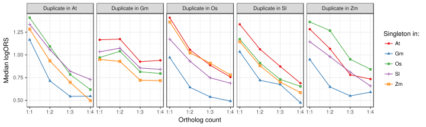

Comparison of duplicated genes
Aim of this analysis
investigate the expression similarity of duplicated genes
Rank distribution and ortholog duplication level
The following plots show the distribution of ranks (i.e. -log10( Pval ) ) for each pair of species and for ortholog duplication level. “N1” refers to the number of ortholog copies in the first species and N2 in the second. (e.g. a 1:2 ortholog in At:Os would be AtOs N1=1 N2=2)
 The following heatmap of median ranks which may give a better overview:
The following heatmap of median ranks which may give a better overview:
The main observation is that 1:1 orthologs clearly tend to have higher ranks than orthologs with any number of duplicates and that the ranks get lower when the number of orthologs increases. (Note that there is increased uncertainty in the median of the larger groups as they are more rare). An interresting pattern is that orthologs with either one or two copies in Gm seem to have the approximately same ranks. A possible explanation could be the recent duplication in Gm and that a high portion of the genes that prefer occurr in single copies haven’t had time to lose its copy.

1:2 orthologs
If we look at 1:2 orthologs we can plot the score between the single ortholog and the two duplicate orthologs. The following plots show the -log10(P) transformed rank for each of the two alternative orthologs plotted against each other. If both of the duplicate genes have retained the same function we expect them to be similar, while if one of the duplicates have taken a different function (i.e. neo- or sub-functionalized) they may have diverged expressed patterns. Since the score for each of the duplicates also depends on whether the single ortholog has diverged it is however expected the scores correlated to a certain degree. There is one plot for each species-pair and the order of the species indicates which species that contain the duplicate, e.g. AtGm contains the At1:Gm2 orthologs.


The set of genes that have a 1:1 ortholog relationship between At and Os are more likely to be essential and therefore have a conserved expression pattern. Given the recent WGD in Gm there are many of these genes that have duplicate orthologs in Gm (i.e. At1:Gm2). The plots below compare the ranks distribution of two groups of At1:Gm2 orthologs, those that are At1:Os1 (singleton) and those that are not. The singletons are expected to be under selective pressure to retain the expression pattern. It does not seem to be any significant difference between the groups regarding the correlation between the duplicate ranks, indicating that different selection pressure does not affect difference in the expression between the two duplicates since the duplication in Gm. However, there is a significant difference in the mean ranks of the two duplicates in the two groups, i.e. the singleton group tend to have higher ranks. This might indicate that most of the expression divergence occured in the At lineage or before the WGD in the Gm lineage. If we compare the ranks of the At1:Os1 orthologs with the corresponding mean ranks of the At1:Gm2 orthologs we see that they correlate well but that At1:Gm2 rarely have higher rank than At1:Os1. As At:Os is more distantly related than At:Gm this is not expected. A boring explanation could be that the reduced ranks in At:Gm is mainly a result of sample bias in Gm.